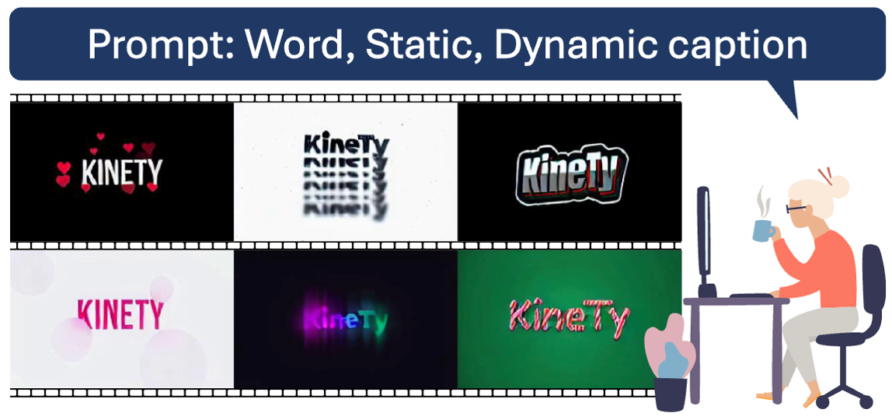
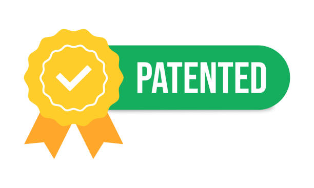

Publications
- All
- Conference
- Journal
- Patent

Kinetic Typography Diffusion Model
European Conference on Computer Vision (ECCV), 2024

KINETIC TYPOGRAPHY VIDEO GENERATION SYSTEM AND CONTROL METHOD THEREOF, AND LEARNING METHOD OF KINETIC TYPOGRAPHY VIDEO GENERATION SYSTEM
Korea Patent App. 10-2562677, Oct 2024
METHOD FOR CREATING BLACK-AND-WHITE PHOTO THAT IMITATES EXPERT RETOUCHING STYLES
US Patent App. 18/508.456, Nov 2023
METHOD FOR CREATING BLACK-AND-WHITE PHOTO THAT IMITATES EXPERT RETOUCHING STYLES
Korea Patent App. 10-2023-0030667, Mar 2023
METHOD FOR GENERATING TASK-SPECIFIC SCENE STRUCTURE
Korea Patent App. 10-2023-0008665, Mar 2023
METHOD FOR GENERATING TASK-SPECIFIC SCENE STRUCTURE
US Patent App. 18/410,525, Jan 2024
IMAGE HARMONIZATION METHOD THROUGH INPAINTING BOUNDARIES OF FOREGROUND IMAGE
Korea Patent App. 10-2562677, May 2022